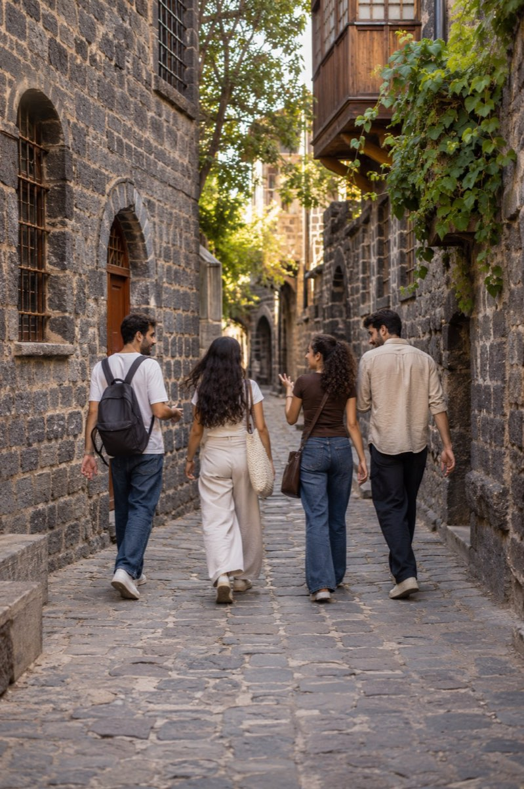
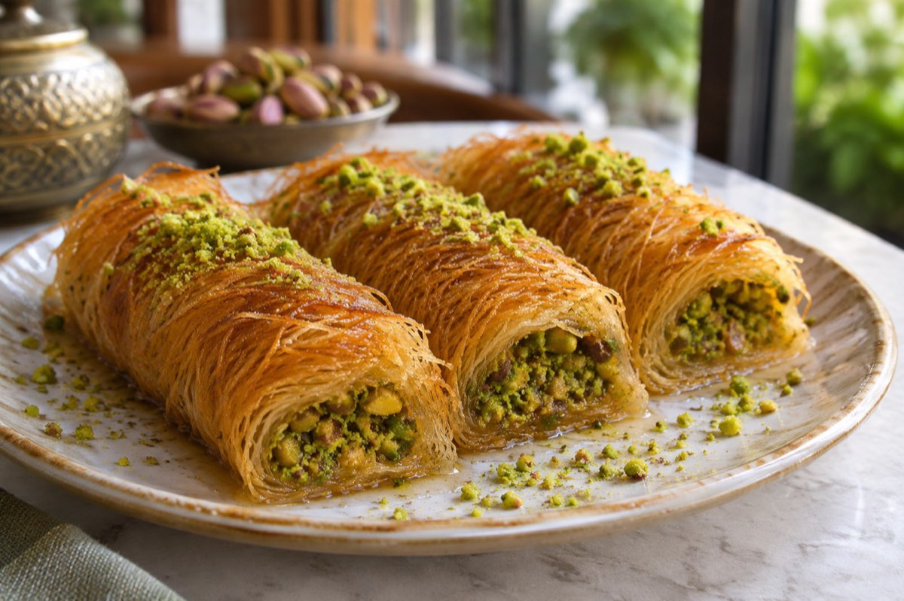
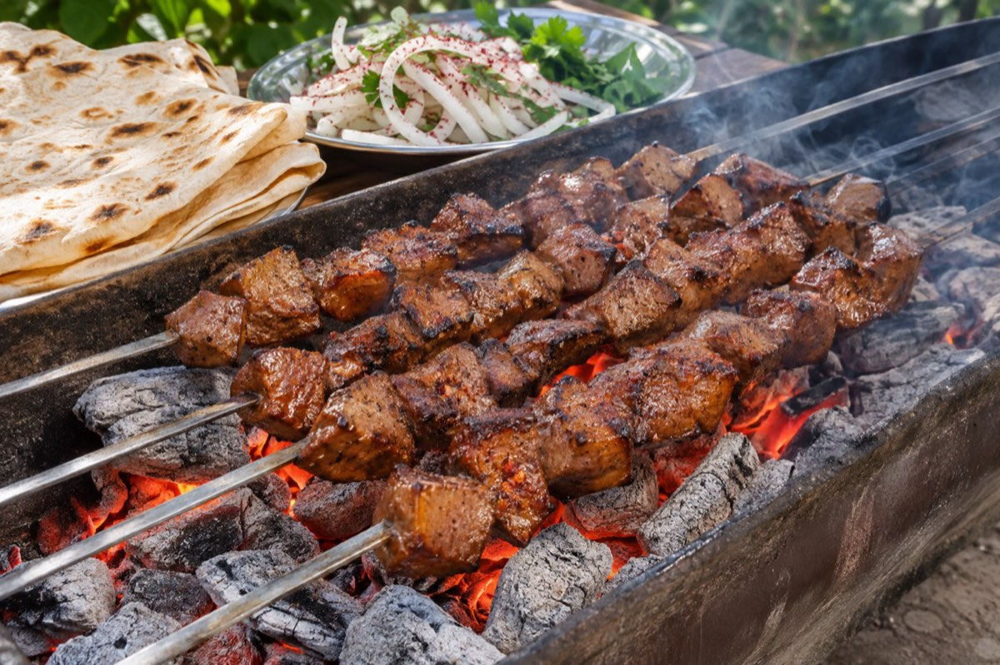

Zeynep A.Hasan Paşa Hanı
Hanın avlusunda kahvaltı sonrası iki saat oturduk, kalkası gelmiyor insanın.
- Mehmet K. Üst kattaki kahveciyi de dene.
- Rojda T. Cumartesi biz de oradayız.
Hanın avlusunda kahvaltı sonrası iki saat oturduk, kalkası gelmiyor insanın.

Ulu Cami'ye giden dar sokaklardan kısa bir yürüyüş.
Surların altından bahçelere indik, Dicle bugün çok sakin.


Kaburga dolması masaya gelir gelmez bitti, burma kadayıfa yer kalmadı.

Burma kadayıf sıcak geldi. 500 puanla bir tabak da ödül aldım.

İki kişilik ciğer menüsü bugün de 840 TL. Mangal 11:00'de yanıyor.
Tasarım önizlemesi, Webizmo